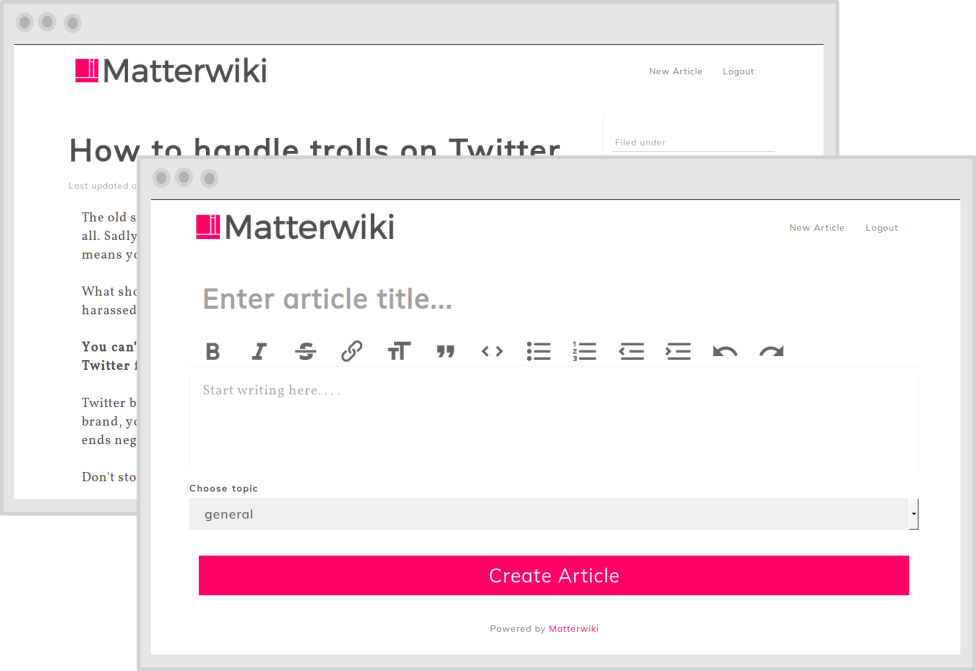

A simple and beautiful wiki for teams
People use it to store documentation, notes, culture guidelines, employee onboarding content and everything they want to.

A website or database developed collaboratively by a community of users, allowing any user to add and edit content. Example: Wikipedia
Wiki softwares are too complicated for small teams. Matterwiki is just that, a simple wiki for teams to store and collaborate on knowledge.
As your company grows it becomes difficult to keep track of all the knowledge in your team. It is difficult to communicate every detail about company policies to new team members. Things get lost in Slack channels. It becomes difficult to keep things in context.
A wiki helps you keep track of all this information. Every article is filed under a topic to keep things organised among departments. Everything is transparent, who made what changes to which document and when.
Unlike traditional wiki softwares,
Matterwiki uses a simple WYSIWYG editor.
That means,
No complex formatting or structure to follow.
The editing environment you're comfortable in.
WYSIWYG = What you see is what you get.